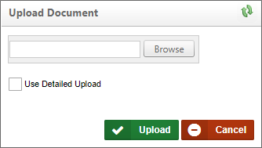
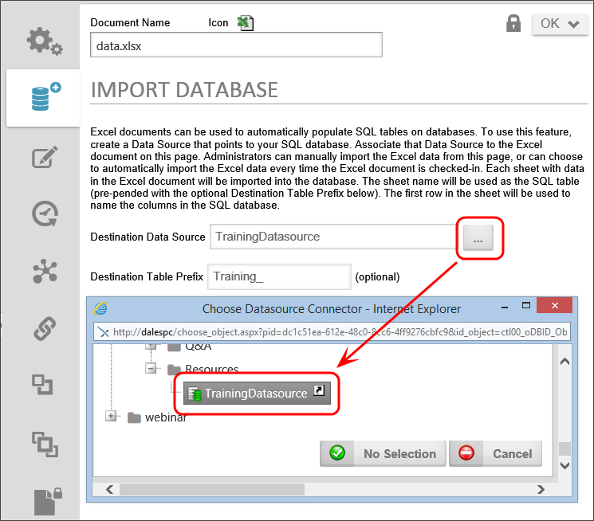
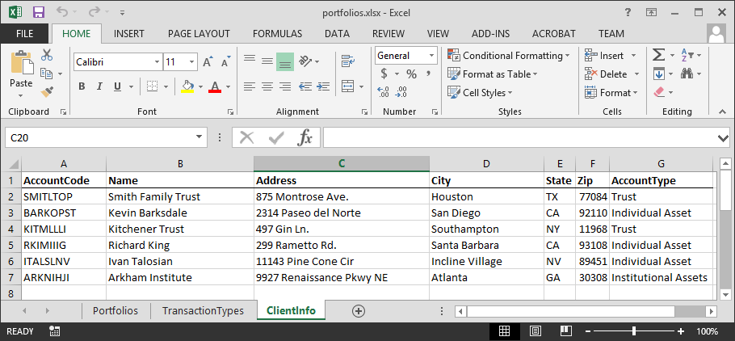

Process Director can use a Microsoft Excel spreadsheet as a data source, enabling you to check out and edit the spreadsheet whenever needed. Process Director can re-import the data every time you check the spreadsheet back in, to ensure the data always reflects the current values in the spreadsheet.
To create the structure of an internal database table, one must use MS Excel, following these steps:
The names of each of the cells in the top row of the Excel sheet will become the names for the database fields.
Each row below the top is a place for data to be entered. Enter the proper information under the proper columns.

Each sheet acts as a different table in the database. Each table can have different field names and different data.
Process Director won't transform the Excel sheet under the following conditions:
Process Director will ignore default sheet names, like “Sheet1”, “Sheet2”, or any sheet whose name matches the Sheet# pattern, and you can't use spaces in sheet names. Additionally, sheet names that start with the "#" character will also be ignored. Process Director won't transform any sheets whose A1 cell is empty. You need to rename the default sheet names, therefore, with meaningful names. The sheet names you provide will be used to create and name database tables, so you should ensure that sheet names, like field names, don't use spaces or special characters, in order to make them compliant with database naming conventions.

To import the data from the Excel spreadsheet, you must create a Datasource that connects to the database you wish to use to store the imported Excel data. You can use any accessible database, including the BP Logix Internal User database, to store the Excel data. See the Datasource Objects topic for information about how to configure a Datasource.
Once the Datasource is created, you need to import data into it from the Excel file you made. Go to the Content List. Under the Create New dropdown menu, select Document/File to open the Upload Document page.

On the Upload Document page, click the Browse button and locate the Excel file in your local file system. Double click the file to save and close the browse dialog box, then click the Upload button to upload the file to your partition.
The final step is to take the data from the uploaded Excel file and import it into the data source. After the Excel file is uploaded, you'll be presented with the object definition screen for the Excel file. Click on the Import Database tab. Click the Destination Data Source property's Build button to select the data source you created earlier.

After selecting the desired Datasource, a series of properties provide additional settings you can configure to govern how the data will be imported.
|
Option |
Explanation |
|---|---|
|
Destination Table Prefix |
This is the text string that will be prepended to your existing Excel sheet names in the database. By default, the value of this property is "Excel_". So if your sheet name was “February_Users” in Excel, when you looked for it in the database, it would be named “Excel_February_Users” |
|
Drop database tables before import |
To “DROP” a table is to delete it completely. The difference between “dropping” a table and the “Clear database rows” checkbox is that if you only clear the rows, the format of the information in existing fields (columns) is kept. In other words, in Excel, if you had a date field called “Married” and imported it to the database with date information, Process Director expects date formatted information to be entered in that field. If you opened Excel and altered the “Married” column to be a Boolean (True/False) value, and did not drop the tables when you imported, you'd generate an error. |
|
Create database tables if needed |
If you have a previously imported Excel spreadsheet and add a new sheet to it in Excel, Process Director won't import the new sheet as a new table unless this checkbox is checked. |
|
Clear database rows in tables before inserting |
This is the difference between recreating a table’s information, and appending the information in Excel to the existing table in Process Director. Appending of tables is usually only done by database administrators when building or editing informational databases. If you want the table in PD to look just like what you saw in Excel, select this checkbox. |
|
Automatically import this Excel file after every check-in or import. |
After you've added an Excel spreadsheet to your Process Director instance, you'll need to “check out and edit” the file in order to open it and make changes. After your changes are made, you select “upload and check in” and this checkbox will automatically recreate or append the information in your PD database without you having to re-import the file.
|
Now you can click the Import Tables Now button to import the Excel data into your Datasource.
Click here to use the Simulator to create a datasource and import an Excel file to the Internal User Database (SQL Server).
This allows you to use a Microsoft Excel sheet and transform the content to a table and data within a data source specified in Process Director. This is useful when you need to add data to a database without having to use a database management tool. A form that performs these functions can be distributed from BP Logix and is also included in the sample files Process Director.
It is important to configure your Excel file to these specifications in order for Process Director to transfer the data correctly.

If you use any of the "bp_*" keywords, the data will be converted into a SQL data type, as follows:
| Keyword | SQL Data Type |
|---|---|
| bp_string | NVarchar(MAX) |
| bp_bool | Bit |
| bp_decimal | Decimal(18,4) |
| bp_int | Int |
| bp_datetime | Datetime |
Your Excel file should represent a database table with columns and rows. Here is a sample of what it can look like:

Additional options allow you to:
 When importing a project from an XML file into the Content List, if the project contains an Excel file to import into the database, the database import will not be performed if this property is unchecked.
When importing a project from an XML file into the Content List, if the project contains an Excel file to import into the database, the database import will not be performed if this property is unchecked.